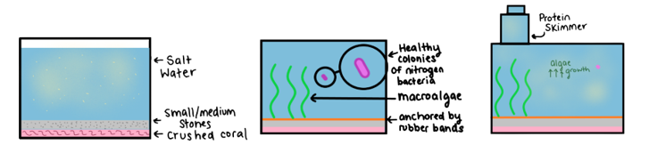
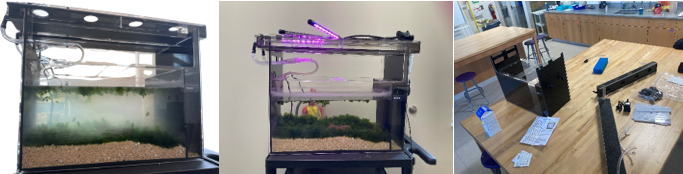

Chapter 2 New Tapei City Carbon Neutral Forum
In the Spring of 2022 Innovation Academy was visited by a school from Taipei. Their students came and toured our campus and frankly I’m not sure which school it was, but I believe they were here to observe a “vocational” school in another country. As someone who was not directly involved with the visit it was rather forgettable. That was until I received an email from Ms. Paxton over the summer: an invitation to the “New Taipei City: Carbon Neutral Summit”, also known as New Taipei City MAGIC. MAGIC being an acronym for “Maker, Action, Green, International, and Cross-domain.”
It was an exciting opportunity which I promptly agreed to. It wouldn’t be until August that I would hear more about the project, and we quickly organized and began brainstorming. Staying two hours after school I, along with Joaquin Friedman, Cyrus Zhou, Sejal Whitaker, Lauren Trute, and Megan Roka came deliberated over what would become our project.
This presented the first point in the project where we really could’ve gone about things better. Deciding what problem to focus on took much longer than anticipated, and ultimately, we were left with a half-baked topic. It came down to High Density Polyethylene recycling using a solar oven, or a personal seaweed growing system for urban agriculture. We decided to split into groups and take a week to research the individual projects before coming together for a subsequent debate.
Neither group did a whole lot of research, and we ended up deciding on the seaweed growing system due to the potential to talk about urban agriculture in our presentation which was a largely under-discussed topic in the sustainability field, especially for this summit, which from what we saw was dominated by gimmicky inventions that couldn’t really apply to the world outside of pure hypotheticals.
The submission requirements for the project asked for both a written document and a developed project, however the due dates were about a month apart. Naturally we started with the written document as by the time we decided on the project subject it would be due in just two weeks.
We met on the next Flex Friday and spent the morning session researching the benefits of urban agriculture as well as the health effects of adding seaweed to a diet. Both were interesting topics, and by far the opportunity to research these fields were the most memorable takeaways from this project. Not being able to finish during the session we went to work over the coming two weeks, finishing just in time and getting the document submitted.
2.1 Plan Revision
A few days after submitting the written plan we received an email from a correspondent NTPC forum. They informed us that rather than a limit of 10 pages as was described in the instructions we were provided; the limit was instead 2 pages. Fortunately, we were given a few more days to update the written plan, but this was a frustrating development.
Over the course of the next week, I worked with Cyrus Zhou to condense the written plan down to just 2 pages. It was unfortunate to have to have to take out all of the work we had done, but it wasn’t a complete waste as the information removed from the written plan was still useful for the presentation and fabrication of the project.
Finding information on the forum was one of the most difficult aspects of the project and required numerous hours of searching around online to find resources to draw examples from. As this is something I hope we continue to participate in for the foreseeable future I’ve attached all the links I was able to find in my search below:
- https://www.youtube.com/@sheng_jutseng8277
- https://www.youtube.com/watch?v=U8PszsL86tQ&ab_channel=Peggiehunge
- https://www.youtube.com/watch?v=16ZL_759GhU&ab_channel=%E9%99%B6%E5%B7%A5%E7%A7%91%E4%B8%BB%E4%BB%BB%E5%85%AC%E5%8B%99%E4%BF%A1%E7%AE%B1%E6%96%B0%E5%8C%97%E5%B8%82%E9%B6%AF%E6%AD%8C%E5%B7%A5%E5%95%86
- https://www.youtube.com/watch?v=CjC_zZYYXmA&ab_channel=%E6%96%B0%E5%8C%97%E5%B8%82%E6%95%99%E8%82%B2%E5%B1%80
- https://www.ntpc.gov.tw/ch/home.jsp?id=e8ca970cde5c00e1&dataserno=8a975b566bbfea08c6c8c2c76f8fcc16
- https://www.taipeitimes.com/News/taiwan/archives/2019/10/18/2003724177
- https://news.immigration.gov.tw/NewsSection/Detail/0a7bd59c-a892-4b26-a0f7-325fd09df71a?category=9&lang=EN
- https://legacy.sccoe.org/sccsba/docs/news/Newsletter_2023_1.pdf
- https://sites.google.com/ctjhs.ntpc.edu.tw/ntpc-magic/about-us?authuser=0
- https://www.ntpc.edu.tw/home.jsp?id=d127e0ce0f4f407b&act=be4f48068b2b0031&dataserno=ebbffbc12d05d323f3b7507b07de71ee
- https://youtu.be/CjC_zZYYXmA?t=14442
2.2 Building the Prototype
With the written plan submitted we got started on the physical prototype, the second step of the project submission requirements. For future submissions to the NTPC forum I recommend placing the feasibility of creation at the forefront of your project decision. In our case it was more of an afterthought, which presented some unique challenges.
The first challenge was having to adapt our design to materials we already had. We had to do this due to starting the building too late and not possessing enough funds to acquire exactly every material we wanted. This manifested itself in the building process through requiring we use a tank designed for aquaponics, as well as grow lights and a pump instead of a protein skimmer and macroalgae as we had designed. For a speedily constructed prototype these were perfectly fine accommodations and did not significantly affect the product.
The second challenge was getting the seaweed to grow in the tank. We had to order the seaweed online and by the time it got here we needed to put it in very quickly and didn’t have enough foundational knowledge to ensure it adapted well to the conditions of the tank. Luckily it was able to survive well, and as you can see in the image only a fraction of the seaweed floated up to the top, while the rest was able to connect with the rocks at the bottom and begin growing normally.
A third issue was these rocks themselves. The calcium coming off the rocks resulted in an extremely foggy water, making visibility difficult which we’d need to fix to be able to present. This was chiefly due to the rocks we purchased and the way we ended up fixing this was through aggressive washing of the rocks over the course of an hour.
The final hurdle we had to address was the salinity of the water. We purchased aquarium salt for the tank but upon reading the back found that the measurements provided were for freshwater. The seaweed naturally required the salinity of seawater to thrive in our tank. After numerous pH tests we were able to center in on the salinity, however this would’ve been made far less stressful and rushed with ample foreground research, which is my main piece of advice for future students participating in the forum.
 
2.3 Presentation
Finding ourselves at the tail-end of the project we had now completed the written plan as well as the physical prototype, and now we only had to finish the recorded presentation of our work. This was required as Fulton County had declined any possibility of travel to Taipei, not that it would’ve been feasible regardless of their decision.
Over the course of the project motivation presented a consistent challenge towards completion. This is true of any project, but I’ve observed it can be especially potent in projects such as these with an environmental or more broadly a sort of counter-cultural focus. Environmentalism is often not the popular stance for a variety of reasons out of scope of this reflection, and because of this unpopularity the execution of these projects requires a lot of intrinsic motivation. This was something we were fortunate to possess a satisfactory quantity of, even if only marginally so. Because of this I encourage you to support your colleagues in these endeavors as work can often feel thankless despite its importance.
Creating the presentation and recording were hindered and slowed by this lack of motivation. We were fortunate to have Joaquin Freidman take lead of the project and ensure everyone kept up enough effort to see the project through to completion.
With the deadline on the horizon, we finished the PowerPoint and selected three members of the team to present in the video. There was a preference for underclassmen but unfortunately, we weren’t able to drum enough interest for the project due to not starting work soon enough. Aiden Seabusch, Lauren Trute, and Joaquin Freidman came together on during the tutoring session of the Flex Friday a week before the deadline and recorded the video.
Unfortunately, the video was rough, and it wasn’t something we felt confident about presenting to the summit, prompting a second take. Because this was our school’s first year participating in this annual event, we really wanted to ensure we presented our best work. After refining the PowerPoint and recording a second take, we were left with something we were proud of. We reviewed the video and made sure it was good and submitted it to the correspondent. The video was in and with it the final part of the project.
Participating in the NTPC Summit represented a great opportunity to share ideas with students from around the world and get our name out there in the environmental space. If you have the opportunity to participate I’d highly recommend it, especially if you’re able to travel to Taipei!